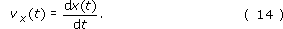
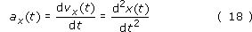
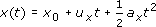
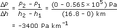
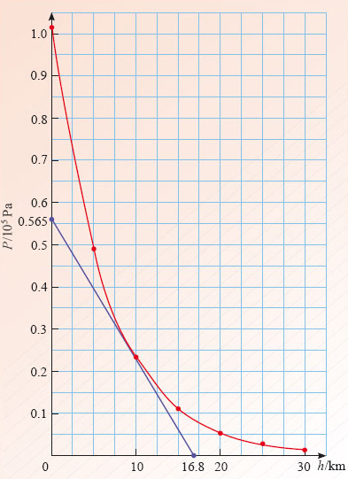
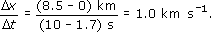
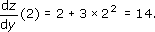
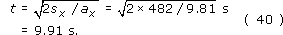

6 Closing items¶
6.1 course summary¶
A coordinate system provides a systematic means of specifying the position of a particle. A system in one dimension involves choosing an origin and a positive direction in which values of the position coordinate increase. Values of the position coordinate are positive or negative numbers multiplied by an appropriate unit of length, usually the SI unit of length, the metre (m).
The movement of a particle along a line can be described graphically by plotting values of the particle’s position x, against the corresponding times t, to produce a position-time graph. Alternatively, by choosing an appropriate reference position xref and defining the displacement from that point by sx = x − xref, the motion may be described by means of a displacement-time graph.
Uniform motion along a line is characterised by a straight-line position-time graph that may be described by the equation

where vx and x0 are constants. Physically, vx represents the particle’s velocity, the rate of change of its position with respect to time, and is determined by the gradient of the position-time graph

x0 represents the particle’s initial position, its position at t = 0, and is determined by the intercept of the position-time graph, the value of x at which the plotted line crosses the x-axis, provided that axis has been drawn through t = 0.
Non-uniform motion along a line is characterised by a position-time graph that is not a straight line. In such circumstances the rate of change of position with respect to time may vary from moment to moment and defines the instantaneous velocity. Its value at any particular time is determined by the gradient of the tangent to the position-time graph at that time.
More generally, if the position of a particle varies with time in the way described by a function x(t), then the way in which the (instantaneous) velocity varies with time will be described by the associated derived function or derivative

The instantaneous acceleration is the rate of change of the instantaneous velocity with respect to time. Its value at any time is determined by the gradient of the tangent to the velocity-time graph at that time. More generally, the way in which the (instantaneous) acceleration varies with time will be described by the derivative of the function that describes the instantaneous velocity, or, equivalently, the second derivative of the function that describes the position:

Results and rules relating to differentiation and the determination of derivatives are contained in Table 6. The derivative of a constant is zero, the derivative of f(y) = Ayn is df/dy = nAyn −1.
The signed area under a velocity-time graph, between specified values of time, represents the change in position of the particle during that interval.
Uniformly accelerated motion is a special case of non-uniform motion characterised by a constant value of the acceleration, ax = constant. In such circumstances the velocity is a linear function of time (vx(t) = ux + axt), and the position is a quadratic function of time (  ).
The most widely used equations describing uniformly accelerated motion are


Position x, displacement sx, velocity vx, and acceleration, ax, are all signed quantities that may be positive or negative, depending on the associated direction. The magnitude of each of these quantities is a positive quantity that is devoid of directional information. The magnitude of the displacement of one point from another, s = |sx|, represents the distance between those two points, while the magnitude of a particle’s velocity, v = |vx|, represents the speed of the particle. The magnitude of the acceleration due to gravity is represented by the symbol g, and has the approximate value 9.81 m s−2 across much of the Earth’s surface.
6.2 End-of-course questions¶
Question 25¶
Question¶
Table 8 shows the atmospheric pressure P in pascals (Pa) at various heights h above the Earth’s surface. Plot a graph to give a visual representation of the data in the table. Be careful to label your axes correctly. Explain why you have chosen to plot particular variables on the horizontal and vertical axes. Use your graph to find the rate of change of atmospheric pressure with height at h = 10 km.
h/km | P/Pa |
|---|---|
0 | 101 325 |
5 | 48 586 |
10 | 23 297 |
15 | 11 171 |
20 | 5357 |
25 | 2569 |
30 | 1232 |
Answer¶
The graph is given in Figure 43. Notice how the vertical axis is scaled by 105 in order to avoid a confusion of numbers on this axis. Since the pressure is the dependent variable, it is plotted on the vertical axis. Conversely, since height is the independent variable, it is plotted along the horizontal axis.
The rate of change of atmospheric pressure with height at 10 km is given by the gradient of the graph at this point. Using the tangent shown in Figure 43, we obtain

(Differentiating the function that was used to produce Table 8 gives a gradient of −3435 Pa km −1 at 10 km.)

Figure 43: Graph for question 25
Question 26¶
Question¶
Define the terms position and displacement, and carefully distinguish between them.
The position x of a particle at time t is given in Table 9. Plot a position-time graph for the data in Table 9.
Using your graph, measure the velocity of the particle at t = 5 s.
A second particle undergoes uniform motion and has the same position and velocity as the first particle at time t = 5 s. What is the displacement of the second particle from the first at time t = 10 s?
Table 9: Data for question 26
t/s
x/km
0
0
1
0.443
2
0.984
3
1.64
4
2.45
5
3.44
6
4.64
7
6.11
8
7.91
9
10.1
10
12.8
Reference:
Answer¶
The position of a point on a line is represented by a coordinate x, measured from some arbitrarily chosen origin. Such a point might represent the instantaneous position of a particle moving along the line. Displacement refers to the difference in position of two points, these might be the initial and final positions of a moving particle, in which case the displacement would represent the change in the particle’s position.
The position-time graph for Table 9 is given by the curve in Figure 44.
The instantaneous velocity is given by the gradient of the tangent at t = 5 s. The gradient of the tangent shown is

(This result compares with the value of 1.087, which is obtained by differentiating the function that was used to produce Table 9.)
The displacement-time graph for the second particle is the tangent at t = 5 s, which we have already drawn in Figure 44 since for uniform motion x = x0 + vxt. From this tangent, we can see that the position of the second particle at t = 10 s is 8.5 km. Hence, the displacement of the second particle from the first is (8.5 − 12.8) km = −4.3 km. Note that the minus sign is an essential part of the answer.

Figure 44: Position-time graph for question 26
Question 27¶
Question¶
Define the terms velocity and acceleration.
The velocity vx of a particle moving along the x-axis at various times t is given in Table 10.
Assuming the particle has a constant acceleration between the given positions, draw a velocity-time graph representing the data in Table 10.
Use your graph to calculate the total displacement of the particle over the time interval given in the table.
Table 10: Data for Self-assessment question 27
vx/m s−1
t/s
4
0
−4
10
0
15
2
20
Reference:
Answer¶
The velocity of a particle is its rate of change of position. The acceleration of a particle is its rate of change of velocity.
The velocity-time graph for Table 10 is given in Figure 45.
The displacement is equal to the signed area under the velocity-time graph. For the interval between 0 s and 10 s, the areas above and below the time axis cancel and consequently the displacement is zero.
For the interval between 10 s and 15 s, the displacement is given by
−(1/2) x 5 x 4 m = −10 m.
For the interval between 15 s and 20 s, the displacement is given by
(1/2) x 5 x 2 m = 5 m.
The total displacement is the sum of all three contributions:
(0 − 10 + 5) m = −5 m.

Figure 45: Velocity-time graph for question 27
Comment In questions 28 to 32, you are not required to draw any graphs.
Question 28¶
Question¶
The variable z is related to the variable y by the equation
z = 3 + 2y + y3.
Find the derivative dz/dy.
Evaluate dz/dy at y = 2.
What would be the gradient of a graph of z plotted against y for the value y = 2?
Answer¶
dz/dy = 2 + 3y2.
Substituting y = 2 into the derivative found in part (a) we obtain
 .
Since the gradient is equal to dz/dy evaluated at y = 2, the answer is 14.
Question 29¶
Question¶
A rocket travels vertically away from the surface of the Moon. It is still close to the Moon’s surface when it jettisons an empty fuel tank. The fuel tank initially travels with the same velocity as the rocket, but falls back to the Moon, reaching the Moon’s surface 50 s after being released. If the fuel tank hits the surface at a speed of 50 m s−1, calculate the speed of the fuel tank when it was jettisoned. You may assume that the magnitude of the acceleration due to gravity near the Moon’s surface is 1.6 m s−2.
Answer¶
Choose an x-axis pointing vertically upwards from the Moon’s surface. Using Equation 28b

with vx = −50 m s−1, ax = −1.6 m s−2 and t = 50 s, we obtain
ux = vx − axt = (−50 + 1.6 × 50) m s−1 = 30 m s−1.
Question 30¶
Question¶
For time t greater than or equal to zero, a particle’s position as it travels along the x-axis is described by the function x(t) = At2, where A = 4.0 m s−2. Use differentiation to calculate how fast the particle is travelling at t = 10 s.
 and therefore
and thereforeQuestion 31¶
Question¶
A vase falls to the ground from a shelf at height 1.80 m above the floor. Neglecting air resistance, calculate the time taken for the vase to strike the floor.
Answer¶
Taking up as the positive direction, and using Equation 28a

with ux = 0 m s−1, ax = −9.81 m s−2 and sx = −1.80m, we obtain

Question 32¶
Question¶
(This question is more difficult than its predecessors.) A rocket is initially at rest on the Earth’s surface. At time t = 0 s the rocket motor is fired and the rocket accelerates vertically upwards at a constant 2.00 m s−2. After a time interval of 20.0 s the motor fails completely and the rocket accelerates back to Earth with a downward acceleration of magnitude 9.81 m s−2.
Calculate the height reached by the rocket at the instant the motor fails.
Calculate the velocity of the rocket at the instant the motor fails.
Find an equation that, for situations involving constant acceleration, gives the displacement in terms of the initial velocity, the final velocity, and the constant acceleration.
Calculate the distance travelled by the rocket from the instant the motor fails until the rocket reaches its highest point. Hence, find the total height gained by the rocket. [Hint: The equation you obtained in part (c) may be useful here.]
Find the total time taken for the rocket to fall back to Earth from its highest point.
Answer¶
(a)Taking up as positive, and using Equation 28a
with ux = 0 m s−1, ax = 2.00 m s−2 and t = 20.0 s, we obtain
sx = (1/2) × 2 × (20.0)2 m = 400 m.
This is the displacement from the initial position when the motor fails. It follows that the height at which the motor fails is s = |sx | = 400 m.
Using Equation 28b
vx = ux + axt
with ux = 0 m s−1, ax = 2.00 m s−2 and t = 20.0 s, we obtain
vx = 0 + 2 × 20.0 m s−1 = 40.0 m s−1.
As shown in Section 5.2, eliminating t from Equations 28a and 28b gives Equation 28c

which we can write as

Substituting vx = 0 m s−1, ux = 40.0 m s−1 and ax = −9.81 m s−2 in the above equation, we obtain

Adding this result to the displacement obtained in part (a) we obtain a total height of 482 m.
Using Equation 28a
with ux = 0 m s−1, ax = −9.81 m s−2 and sx = −482 m, we obtain
